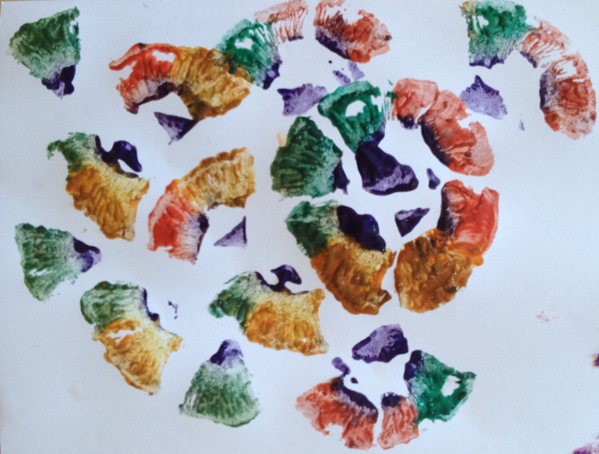
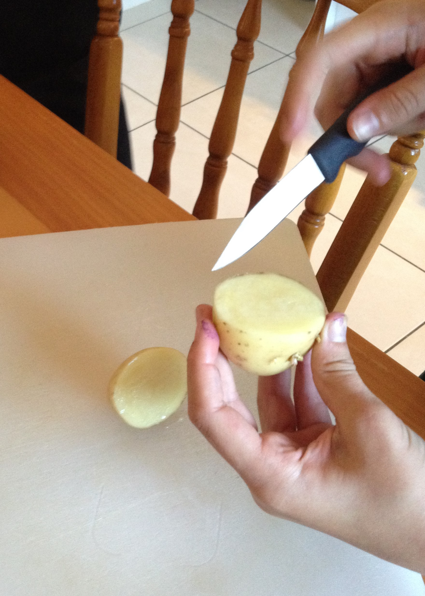
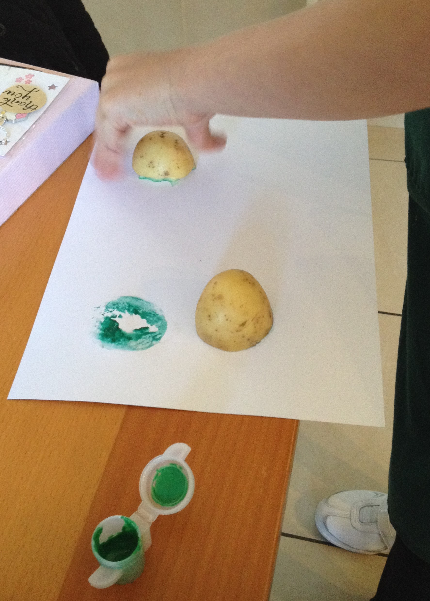
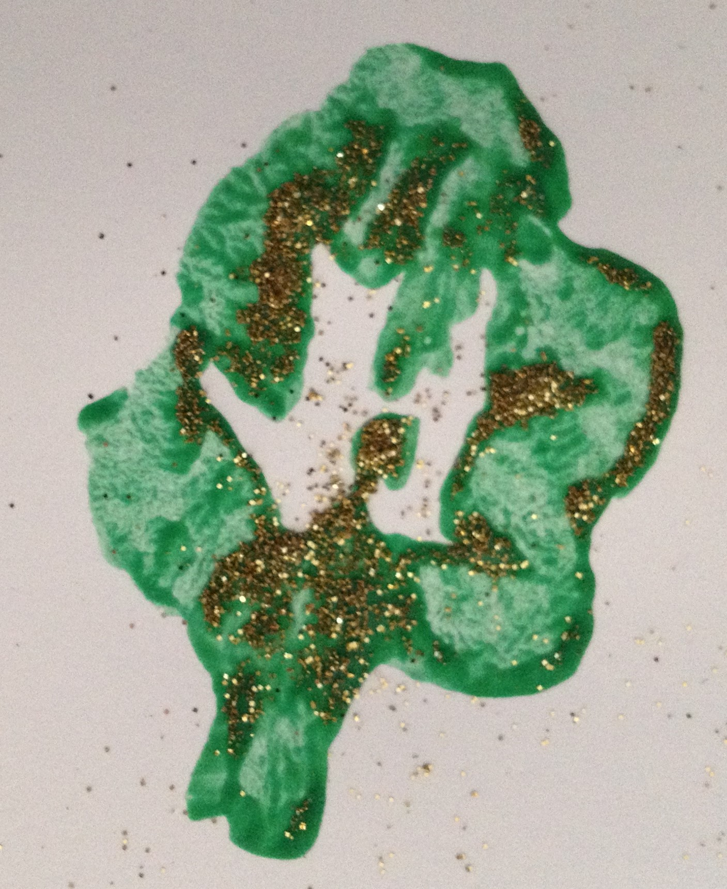
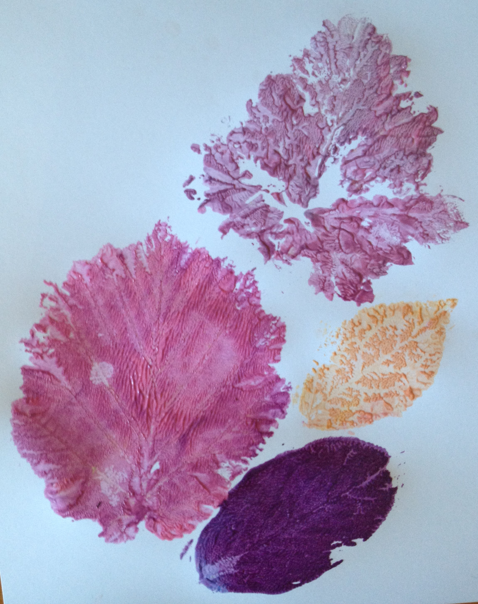
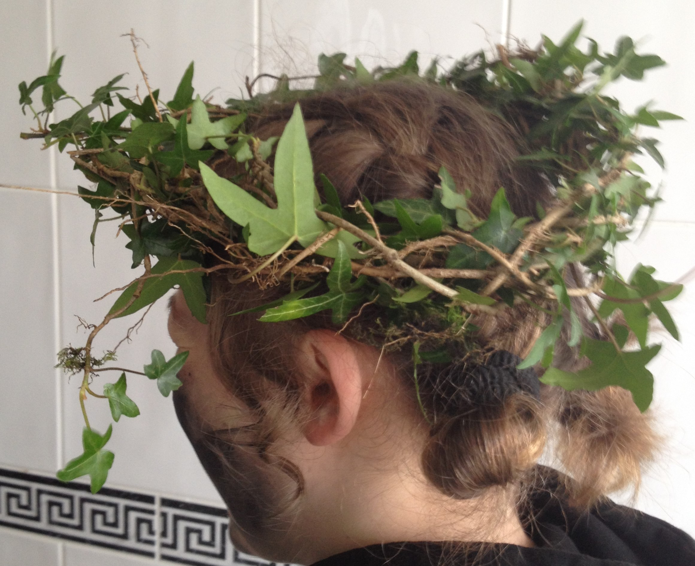
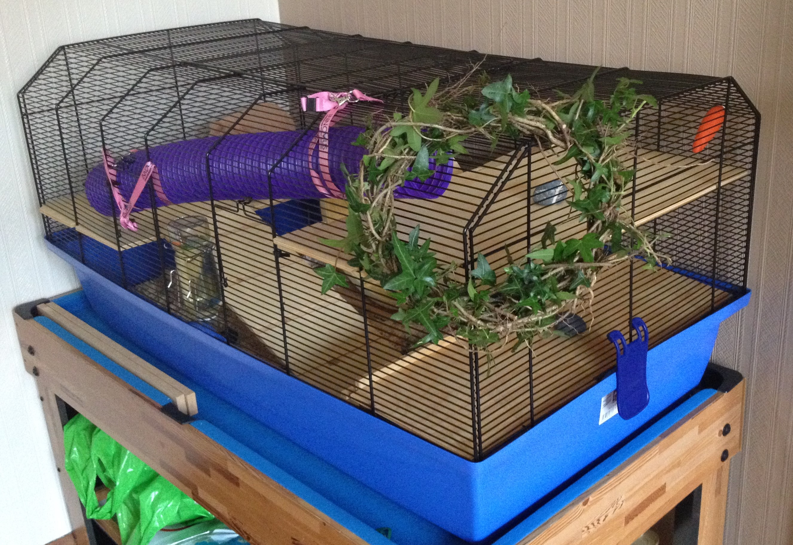

The Vamps might have a wild heart.
But I've got wild art.

It's Day 5 of 30 Days Wild. And I thought my little humans would seek out some paint and make a mess...I mean...erm...they would create some art. They even made their own paint, but no natural ingredients there so I'll not bother telling you more about that. Pretty colours though.
They reused the mushrooms that they'd taken spore prints from yesterday...nobody would eat them. They painted the gills and pressed the mushroom down onto some plain cardboard. Pressed a bit too hard if you ask me because the mushroom disintegrated. However, it did give them smaller pieces to use for printing.
They then carved a potato to make a stamp for printing shapes.
  And they raided the garden for leaves and used them to print patterns. They've told me what plants they took the leaves from, but can you identify them?
Answers: hazel, blackthorn, jostaberry, sage.
Then they couldn't stop. But at least they packed away the paint. Instead they formed some twigs into a circle and wrapped ivy around it. It was a lovely crown for the little humans to wear and they did let me decorate my cage with it for a short while.
 05-Jun-2017 | Milku